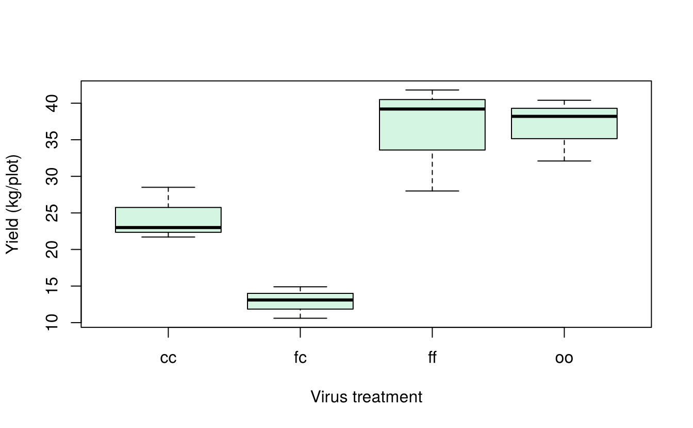
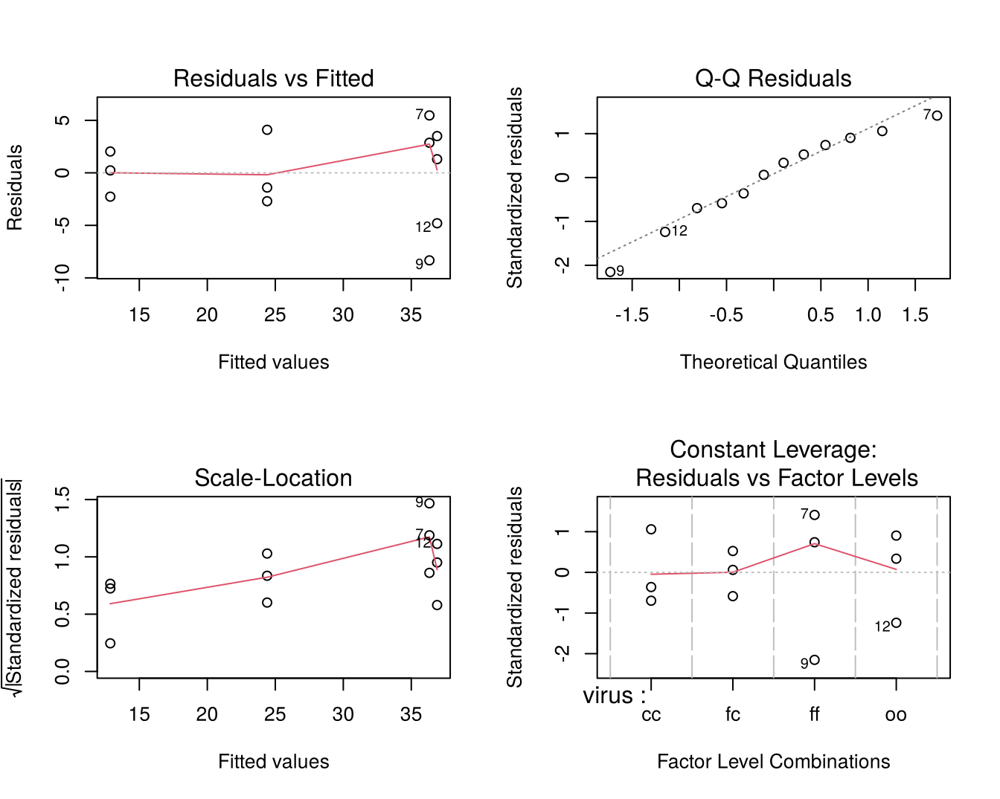
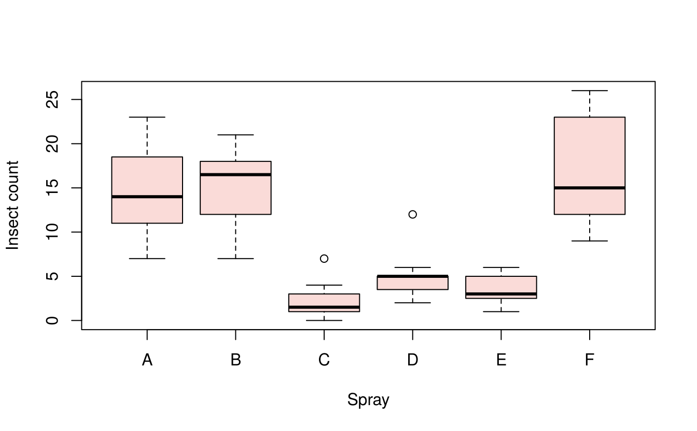
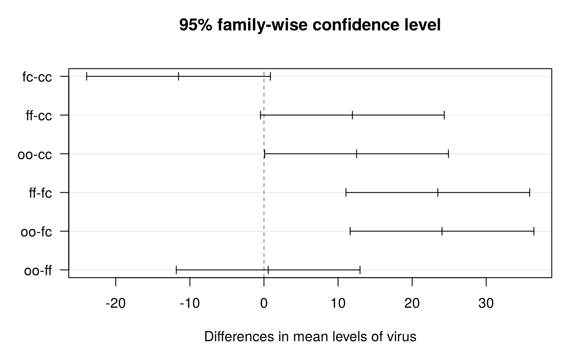

13 Analysis of variance and multiple comparisons
13.1 The concept of analysis of variance
Analysis of variance (ANOVA), developed by R. A. Fisher at Rothamsted Experimental Station in the 1920s, partitions the total variation in a set of observations into parts attributable to different sources (treatments, blocks, error). Comparing the variation between treatment groups with the variation within groups tests whether the treatment means differ.
The t test compares two means. With \(k > 2\) treatments, carrying out all \(k(k-1)/2\) pairwise t tests would inflate the chance of at least one false significant result. ANOVA tests all the means at once:
\[H_0: \mu_1 = \mu_2 = \cdots = \mu_k \qquad \text{vs} \qquad H_1: \text{at least two means differ}\]
13.1.1 Assumptions
ANOVA assumes that
- the effects are additive (the model below is correct),
- the errors are independent (guaranteed by randomisation),
- the errors are normally distributed, and
- the errors have equal variance in all groups (homoscedasticity).
Assumptions 3 and 4 are checked from the residuals after fitting the model (Section 13.3).
13.1.2 Terminology
- Factor: a variable whose effect is studied (variety, fertiliser, spacing). The values of a factor are its levels.
- Treatment: a level of a factor, or a combination of levels of several factors.
- Experimental unit (plot): the unit to which a treatment is applied.
- Replication: the number of experimental units receiving each treatment.
- One-way classification: observations classified by one factor. Multi-way classification: by two or more factors (Chapter 14).
13.2 Completely randomised design (CRD)
In a CRD the treatments are allocated to experimental units completely at random. It is suitable when the units are homogeneous, as in laboratory, pot-culture and greenhouse experiments.
13.2.1 Model
\[y_{ij} = \mu + \tau_i + e_{ij}, \qquad i = 1, \ldots, t; \; j = 1, \ldots, r_i\]
where \(y_{ij}\) is the observation on the \(j\)th unit receiving treatment \(i\), \(\mu\) the general mean, \(\tau_i\) the effect of treatment \(i\), and \(e_{ij} \sim N(0, \sigma^2)\) independent errors.
13.2.2 ANOVA table
| Source | df | SS | MS | F |
|---|---|---|---|---|
| Treatments | \(t - 1\) | \(\text{TrSS} = \sum_i \dfrac{T_i^2}{r_i} - \text{CF}\) | \(\text{TrMS} = \dfrac{\text{TrSS}}{t-1}\) | \(\dfrac{\text{TrMS}}{\text{EMS}}\) |
| Error | \(n - t\) | \(\text{ESS} = \text{TSS} - \text{TrSS}\) | \(\text{EMS} = \dfrac{\text{ESS}}{n-t}\) | |
| Total | \(n - 1\) | \(\text{TSS} = \sum_{ij} y_{ij}^2 - \text{CF}\) |
Here \(T_i\) is the total of treatment \(i\), \(G\) the grand total, \(n = \sum r_i\) and \(\text{CF} = G^2/n\) the correction factor.
13.2.3 Example
An experiment at Tacna, southern Peru, studied the effect of two sweet potato viruses on yield. The four treatments were cuttings infected with sweet potato chlorotic stunt virus (cc), sweet potato feathery mottle virus (ff), both viruses (fc), and healthy plants (oo). Each treatment had three plots of 50 plants, and total yield (kg per plot) was recorded. The data are sweetpotato in agricolae.
#> virus yield
#> 1 cc 28.5
#> 2 cc 21.7
#> 3 cc 23.0
#> 4 fc 14.9
#> 5 fc 10.6
#> 6 fc 13.1
#> 7 ff 41.8
#> 8 ff 39.2
#> 9 ff 28.0
#> 10 oo 38.2
#> 11 oo 40.4
#> 12 oo 32.1
str(sweetpotato)#> 'data.frame': 12 obs. of 2 variables:
#> $ virus: Factor w/ 4 levels "cc","fc","ff",..: 1 1 1 2 2 2 3 3 3 4 ...
#> $ yield: num 28.5 21.7 23 14.9 10.6 13.1 41.8 39.2 28 38.2 ...The treatment variable must be a factor; here it already is. If treatments are coded as numbers, convert them with factor() before the analysis, otherwise R will fit a regression instead of an ANOVA.
tapply(sweetpotato$yield, sweetpotato$virus, mean)#> cc fc ff oo
#> 24.40 12.87 36.33 36.90
boxplot(yield ~ virus, data = sweetpotato, col = "#D5F5E3",
xlab = "Virus treatment", ylab = "Yield (kg/plot)")
13.2.4 Computation by hand
It helps to see the arithmetic once:
y <- sweetpotato$yield
n <- length(y)
G <- sum(y)
CF <- G^2 / n
TSS <- sum(y^2) - CF
Ti <- tapply(y, sweetpotato$virus, sum) # treatment totals
ri <- tapply(y, sweetpotato$virus, length) # replications
TrSS <- sum(Ti^2 / ri) - CF
ESS <- TSS - TrSS
t <- nlevels(sweetpotato$virus)
TrMS <- TrSS / (t - 1)
EMS <- ESS / (n - t)
F <- TrMS / EMS
c(TrSS = TrSS, ESS = ESS, TSS = TSS, F = F,
p_value = pf(F, t - 1, n - t, lower.tail = FALSE))#> TrSS ESS TSS F p_value
#> 1170.2091667 179.9133333 1350.1225000 17.3447833 0.000733413.2.5 Analysis with aov()
The function aov() fits the model. The formula yield ~ virus reads “yield explained by virus”:
#> Df Sum Sq Mean Sq F value Pr(>F)
#> virus 3 1170 390 17.3 0.00073 ***
#> Residuals 8 180 22
#> ---
#> Signif. codes: 0 '***' 0.001 '**' 0.01 '*' 0.05 '.' 0.1 ' ' 1\(F = 17.34\) with (3, 8) df and \(p < 0.001\), so the virus treatments differ significantly in yield. The error mean square, \(\text{EMS} = 22.49\), estimates \(\sigma^2\).
13.2.6 Coefficient of variation, standard errors and critical difference
Agricultural journals usually report, along with the means:
- CV (%) \(= \sqrt{\text{EMS}} / \bar y \times 100\): a measure of experimental precision.
- SE(m) \(= \sqrt{\text{EMS}/r}\): standard error of a treatment mean.
- SE(d) \(= \sqrt{2\,\text{EMS}/r}\): standard error of the difference between two means.
- CD (critical difference, or least significant difference) \(= t_{\alpha/2,\,\text{error df}} \times \text{SE(d)}\).
r <- 3
EMS <- deviance(model) / df.residual(model) # error mean square
c(CV = cv.model(model), # agricolae function
SEm = sqrt(EMS / r),
SEd = sqrt(2 * EMS / r),
CD5 = qt(0.975, df.residual(model)) * sqrt(2 * EMS / r))#> CV SEm SEd CD5
#> 17.167 2.738 3.872 8.929The CV of 17.2% is acceptable for a field experiment. Any two treatment means differing by more than the CD (8.93 kg) are significantly different at the 5% level.
13.3 Checking the assumptions
The residuals \(\hat e_{ij} = y_{ij} - \bar y_i\) estimate the errors. Four diagnostic plots are produced by plot() on the fitted model:

- Residuals vs Fitted: should show no pattern, with similar spread at all fitted values. A funnel shape indicates unequal variances.
- Normal Q–Q: points should lie close to the line.
- Scale–Location: another check of equal variance.
- Residuals vs Leverage: identifies influential observations.
Formal tests:
shapiro.test(residuals(model)) # normality of residuals#>
#> Shapiro-Wilk normality test
#>
#> data: residuals(model)
#> W = 0.96, p-value = 0.8
bartlett.test(yield ~ virus, data = sweetpotato) # homogeneity of variances#>
#> Bartlett test of homogeneity of variances
#>
#> data: yield by virus
#> Bartlett's K-squared = 2.4, df = 3, p-value = 0.5Both are non-significant, so the assumptions are reasonable.
13.3.1 When the assumptions fail: an example
The InsectSprays data give insect counts on 12 plots for each of six insecticides. Counts typically have a variance that increases with the mean:
boxplot(count ~ spray, data = InsectSprays, col = "#FADBD8",
xlab = "Spray", ylab = "Insect count")
bartlett.test(count ~ spray, data = InsectSprays)#>
#> Bartlett test of homogeneity of variances
#>
#> data: count by spray
#> Bartlett's K-squared = 26, df = 5, p-value = 0.00009Bartlett’s test is highly significant: the variances are unequal. The square-root transformation, recommended for counts (Chapter 9), stabilises the variance:
#> Df Sum Sq Mean Sq F value Pr(>F)
#> spray 5 88.4 17.69 44.8 <2e-16 ***
#> Residuals 66 26.1 0.39
#> ---
#> Signif. codes: 0 '***' 0.001 '**' 0.01 '*' 0.05 '.' 0.1 ' ' 1
bartlett.test(sqrt(count) ~ spray, data = InsectSprays)#>
#> Bartlett test of homogeneity of variances
#>
#> data: sqrt(count) by spray
#> Bartlett's K-squared = 3.8, df = 5, p-value = 0.6
shapiro.test(residuals(model_sq))#>
#> Shapiro-Wilk normality test
#>
#> data: residuals(model_sq)
#> W = 0.99, p-value = 0.7After transformation both assumptions are satisfied, and the sprays differ highly significantly. Present the means in the original units (or back-transformed), but base the significance tests on the transformed analysis.
If no transformation works, use the non-parametric Kruskal–Wallis test:
kruskal.test(count ~ spray, data = InsectSprays)#>
#> Kruskal-Wallis rank sum test
#>
#> data: count by spray
#> Kruskal-Wallis chi-squared = 55, df = 5, p-value = 2e-1013.4 Multiple comparison procedures
A significant F test says that the treatments are not all equal, but not which treatments differ. Multiple comparison procedures answer that question. They differ in how they control the error rate:
| Procedure | Use | Error rate controlled |
|---|---|---|
| Least significant difference (LSD) | Planned comparisons; only after a significant F (Fisher’s protected LSD) | per comparison |
| Duncan’s multiple range test (DMRT) | Widely used in agricultural research to rank all means | intermediate |
| Tukey’s honestly significant difference (HSD) | All pairwise comparisons | family-wise (experiment-wise) |
| Scheffé’s test | All possible contrasts, not only pairs | family-wise (most conservative) |
| Bonferroni | A small number of planned comparisons | family-wise |
| Dunnett’s test | Each treatment against a control | family-wise |
The agricolae package implements these tests and labels the means with letters: means sharing a letter are not significantly different.
13.4.1 Least significant difference (LSD)
\[\text{LSD} = t_{\alpha/2,\,\text{edf}} \sqrt{\text{EMS}\left(\frac{1}{r_i} + \frac{1}{r_j}\right)}\]
lsd <- LSD.test(model, "virus", alpha = 0.05, console = TRUE)#>
#> Study: model ~ "virus"
#>
#> LSD t Test for yield
#>
#> Mean Square Error: 22.49
#>
#> virus, means and individual ( 95 %) CI
#>
#> yield std r se LCL UCL Min Max Q25 Q50 Q75
#> cc 24.40 3.610 3 2.738 18.086 30.71 21.7 28.5 22.35 23.0 25.75
#> fc 12.87 2.159 3 2.738 6.553 19.18 10.6 14.9 11.85 13.1 14.00
#> ff 36.33 7.333 3 2.738 30.020 42.65 28.0 41.8 33.60 39.2 40.50
#> oo 36.90 4.300 3 2.738 30.586 43.21 32.1 40.4 35.15 38.2 39.30
#>
#> Alpha: 0.05 ; DF Error: 8
#> Critical Value of t: 2.306
#>
#> least Significant Difference: 8.929
#>
#> Treatments with the same letter are not significantly different.
#>
#> yield groups
#> oo 36.90 a
#> ff 36.33 a
#> cc 24.40 b
#> fc 12.87 cThe LSD is 8.93 kg, the same as the CD computed above. Healthy plants (oo) and plants infected with feathery mottle virus alone (ff) do not differ; both outyield cc, and the double infection fc gives the lowest yield.
13.4.2 Duncan’s multiple range test (DMRT)
DMRT uses a different critical range for means that are \(p\) steps apart in the ranked list:
dmrt <- duncan.test(model, "virus", console = TRUE)#>
#> Study: model ~ "virus"
#>
#> Duncan's new multiple range test
#> for yield
#>
#> Mean Square Error: 22.49
#>
#> virus, means
#>
#> yield std r se Min Max Q25 Q50 Q75
#> cc 24.40 3.610 3 2.738 21.7 28.5 22.35 23.0 25.75
#> fc 12.87 2.159 3 2.738 10.6 14.9 11.85 13.1 14.00
#> ff 36.33 7.333 3 2.738 28.0 41.8 33.60 39.2 40.50
#> oo 36.90 4.300 3 2.738 32.1 40.4 35.15 38.2 39.30
#>
#> Alpha: 0.05 ; DF Error: 8
#>
#> Critical Range
#> 2 3 4
#> 8.929 9.305 9.515
#>
#> Means with the same letter are not significantly different.
#>
#> yield groups
#> oo 36.90 a
#> ff 36.33 a
#> cc 24.40 b
#> fc 12.87 c13.4.3 Tukey’s HSD
\[\text{HSD} = q_{\alpha;\,t,\,\text{edf}} \sqrt{\frac{\text{EMS}}{r}}\]
where \(q\) is the studentized range statistic.
hsd <- HSD.test(model, "virus", console = TRUE)#>
#> Study: model ~ "virus"
#>
#> HSD Test for yield
#>
#> Mean Square Error: 22.49
#>
#> virus, means
#>
#> yield std r se Min Max Q25 Q50 Q75
#> cc 24.40 3.610 3 2.738 21.7 28.5 22.35 23.0 25.75
#> fc 12.87 2.159 3 2.738 10.6 14.9 11.85 13.1 14.00
#> ff 36.33 7.333 3 2.738 28.0 41.8 33.60 39.2 40.50
#> oo 36.90 4.300 3 2.738 32.1 40.4 35.15 38.2 39.30
#>
#> Alpha: 0.05 ; DF Error: 8
#> Critical Value of Studentized Range: 4.529
#>
#> Minimun Significant Difference: 12.4
#>
#> Treatments with the same letter are not significantly different.
#>
#> yield groups
#> oo 36.90 a
#> ff 36.33 ab
#> cc 24.40 bc
#> fc 12.87 cBase R also has TukeyHSD(), which gives a confidence interval and adjusted p-value for every pair:
TukeyHSD(model)#> Tukey multiple comparisons of means
#> 95% family-wise confidence level
#>
#> Fit: aov(formula = yield ~ virus, data = sweetpotato)
#>
#> $virus
#> diff lwr upr p adj
#> fc-cc -11.5333 -23.9330 0.8663 0.0686
#> ff-cc 11.9333 -0.4663 24.3330 0.0592
#> oo-cc 12.5000 0.1003 24.8997 0.0482
#> ff-fc 23.4667 11.0670 35.8663 0.0014
#> oo-fc 24.0333 11.6337 36.4330 0.0012
#> oo-ff 0.5667 -11.8330 12.9663 0.9988
Pairs whose interval does not include zero are significantly different. Tukey’s test is more conservative than LSD and DMRT: it separates the means into overlapping groups (a, ab, bc, c) instead of the three distinct groups found by LSD.
13.4.4 Scheffé and Bonferroni
scheffe.test(model, "virus")$groups#> yield groups
#> oo 36.90 a
#> ff 36.33 a
#> cc 24.40 ab
#> fc 12.87 b
LSD.test(model, "virus", p.adj = "bonferroni")$groups#> yield groups
#> oo 36.90 a
#> ff 36.33 a
#> cc 24.40 ab
#> fc 12.87 b13.4.5 Comparisons with emmeans
The emmeans package (Lenth 2024) computes estimated marginal means and comparisons for almost any model, including unbalanced data and mixed models (Chapter 17).
#> virus emmean SE df lower.CL upper.CL
#> cc 24.4 2.74 8 18.09 30.7
#> fc 12.9 2.74 8 6.55 19.2
#> ff 36.3 2.74 8 30.02 42.6
#> oo 36.9 2.74 8 30.59 43.2
#>
#> Confidence level used: 0.95
pairs(em) # all pairs, Tukey adjustment#> contrast estimate SE df t.ratio p.value
#> cc - fc 11.533 3.87 8 2.979 0.0686
#> cc - ff -11.933 3.87 8 -3.082 0.0592
#> cc - oo -12.500 3.87 8 -3.228 0.0482
#> fc - ff -23.467 3.87 8 -6.061 0.0014
#> fc - oo -24.033 3.87 8 -6.207 0.0012
#> ff - oo -0.567 3.87 8 -0.146 0.9988
#>
#> P value adjustment: tukey method for comparing a family of 4 estimates
# Dunnett's test: each virus treatment against healthy plants (oo)
contrast(em, method = "trt.vs.ctrl", ref = "oo")#> contrast estimate SE df t.ratio p.value
#> cc - oo -12.500 3.87 8 -3.228 0.0313
#> fc - oo -24.033 3.87 8 -6.207 0.0007
#> ff - oo -0.567 3.87 8 -0.146 0.9917
#>
#> P value adjustment: dunnettx method for 3 testsCompared with healthy plants, infection with cc alone and with both viruses (fc) reduced yield significantly, while infection with ff alone did not.
Which test should I use? Choose the procedure before looking at the data, according to the question. For comparing each treatment with a control, use Dunnett. For a few planned comparisons, use contrasts (Chapter 15). For all pairwise comparisons, Tukey’s HSD controls the overall error rate. LSD and DMRT are less conservative and are still widely used in agricultural journals; use LSD only when the overall F test is significant. For quantitative treatments (doses, rates, dates), do not use multiple comparisons at all; fit a response curve (Chapters 15 and 22).
13.5 Unequal replication
The same functions work when treatments have different numbers of replications. For example, with the last observation of fc missing:
#> Df Sum Sq Mean Sq F value Pr(>F)
#> virus 3 940 313.4 12.2 0.0036 **
#> Residuals 7 180 25.7
#> ---
#> Signif. codes: 0 '***' 0.001 '**' 0.01 '*' 0.05 '.' 0.1 ' ' 1
LSD.test(model2, "virus")$groups#> yield groups
#> oo 36.90 a
#> ff 36.33 a
#> cc 24.40 b
#> fc 12.75 cWith unequal replication, the LSD differs between pairs of means; agricolae then uses the harmonic mean of the replications and reports it, while emmeans computes the exact standard error for each pair.
Exercises
- Analyse the
PlantGrowthdata as a CRD. Check the assumptions and compare the treatments with the control using Dunnett’s test. - Analyse the
chickwtsdata (weight of chicks on six feeds). Use Tukey’s HSD to group the feeds. - For the
InsectSpraysdata, use DMRT on the square-root transformed counts and present the treatment means in the original units with their letter groups. - Compute the CD at the 1% level for the sweet potato experiment.